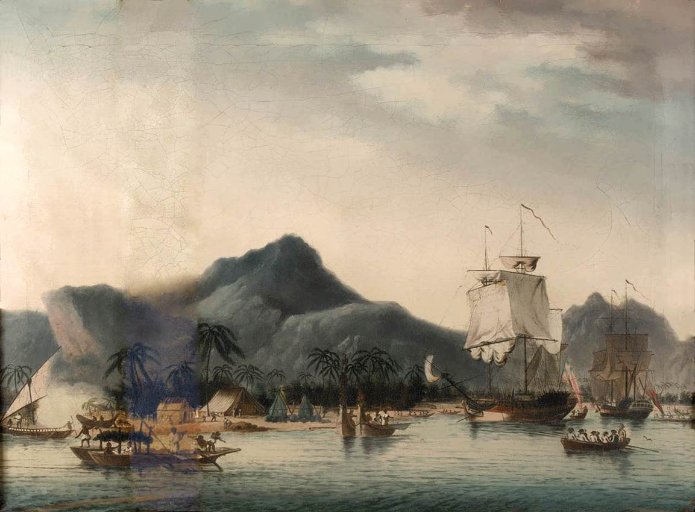

James Cook - objevení Havaje
Životopis
James Cook (27. října 1728 Marton u Yorku – 14. února 1779 Havaj)
byl mimořádně významný mořeplavec, objevitel a výzkumník,
jehož plavby a hlavně vydaná práce výrazně posunula znalosti o Zemi.
Od třinácti let pracoval jako plavčík na uhelné lodi.
V té době se samovzdělával ve všech námořních oborech.
V roce 1755 nastoupil jako kormidelník válečného loďstva.
V roce 1759 se zúčastnil plavby do Severní Ameriky v rámci války s Francií.
Vynikajícím způsobem tehdy zmapoval ústí řeky svatého Vavřince,
proto od roku 1763 pokračoval mapováním Newfoundlandu a Labradoru.
První kontakt
James Cook objevil Havajské ostrovy 18. ledna 1778 během své třetí
expedice na lodi HMS Resolution. Prvním ostrovem, který objevil, byl Kauai.
Poté pokračoval v průzkumu ostatních ostrovů, včetně Oahu a Havaje (známého jako Velký ostrov).
Mapování a zkoumání
Cook a jeho posádka prováděli detailní mapování Havaje a sbírali
informace o zdejší kultuře a obyvatelích. Cookovo mapování bylo později
důležité pro navigaci a objevování Tichého oceánu.
Následky
Cookův objev Havaje vedl k pozdějšímu zájmu evropských
mocností o tyto ostrovy, a nakonec k jejich anexi ze strany
Spojených států v roce 1898. Havaj se stal klíčovým bodem
pro obchodní a politické zájmy v Tichomoří.
Poslední plavba
V letech 1776–1779 vedl třetí výpravu s cílem najít tzv.
severozápadní průjezd kolem Severní Ameriky (což se povedlo až roku 1906 Amundsenovi).
S loděmi Resolution a Discovery obeplul opět Afriku, plavil se přes Tasmánii,
Nový Zéland a Tahiti, objevil Havajské ostrovy (dal jim ovšem jméno Sandwichovy ostrovy)
doplul k Americe, proplul Beringovým průlivem a prováděl mapování.
Po příchodu zimy 1778 se vrátil na Havaj.
Tam se dostal do konfliktu s domorodci a při pokusu zajmout jejich náčelníka
byl 14. února 1779 v zátoce Kealakekua zabit.

Významné dílo
Významné bylo Cookovo dílo. Na všech cestách si vedl pečlivé zápisky,
které vyšly za jeho života i po smrti tiskem. Byl členem Královské
společnosti nauk a získal její zlatou medaili. Všech Cookových výprav se
zúčastnili významní vědci své doby, s jejichž přispěním bylo lidstvo
obohaceno o obrovské množství nových poznatků.
Zdroje
https://www.databazeknih.cz/zivotopis/james-cook-19746
https://chat.openai.com/c/0472fcb1-63da-4c2a-9322-35d15b9c380f
https://www.denik.cz/ze_sveta/james-cook-kapitan-expedice.html
Tento web vznikl za účelem zadání v předmětu dějepisu na škole.